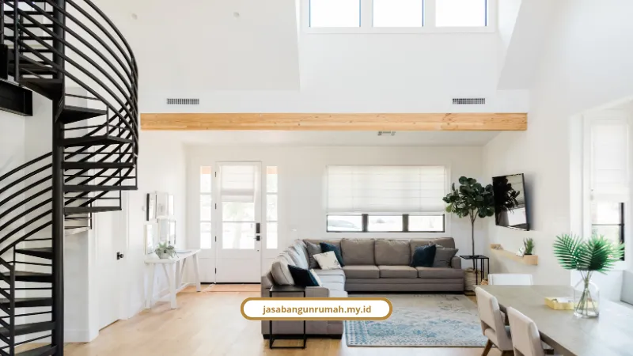

Daftar Isi
Kami menawarkan tiga tipe desain rumah Surabaya, yaitu modern tropis, minimalis modern, dan minimalis industrial, yang semuanya disesuaikan dengan iklim panas dan lahan terbatas di kota ini. Masing-masing punya karakter dan fitur teknis berbeda.
Gaya Rumah Apa yang Paling Cocok untuk Iklim Surabaya?
Gaya modern tropis paling cocok untuk iklim Surabaya yang panas dan curah hujannya tinggi, karena menekankan efisiensi energi lewat penerangan alami dan ventilasi silang. Ini bukan sekadar tren, tapi solusi praktis buat rumah yang adem tanpa boros listrik.
Fitur arsitektur gaya modern tropis yang kami terapkan:
- Bukaan lebar berupa pintu kaca geser atau lipat yang menyambungkan interior dengan taman
- Atap miring, pelana atau limasan, dilengkapi tritisan lebar untuk melindungi dinding dari tampias hujan dan panas matahari langsung
- Kombinasi bentuk geometris modern dengan elemen bernuansa kayu, seperti WPC atau fiber cement
- Palet warna alam (earth tone) dan tekstur semen atau beton ekspos
Denny Setiawan, arsitek yang kami ajak diskusi, menjelaskan detail teknisnya: "Pintu lipat atau geser berbahan kaca memungkinkan banyak udara masuk rumah ketika dibuka sekaligus memperluas pemandangan saat tertutup." Beliau juga menambahkan bahwa "warna beton dan warna kayu itu kembali sekarang, jadi warna-warni dari cat itu sudah mulai ditinggalkan."
Kalau Anda sudah tertarik dengan gaya ini dan mau tahu berapa biaya realistisnya, kami sudah bahas detail tarif di artikel jasa konstruksi rumah Surabaya.
Kenapa Gaya Minimalis Modern Masih Jadi Favorit?
Gaya minimalis modern tetap jadi favorit karena mengusung kepraktisan lewat garis desain bersih, warna netral, dan minim ornamen yang membuat perawatan rumah lebih mudah. Cocok buat keluarga yang tidak mau ribet dengan detail dekoratif berlebihan.
Fitur arsitektur yang biasa kami terapkan pada gaya ini:
- Denah tanpa sekat (open-plan) yang menyatukan ruang tamu, ruang makan, dan dapur agar interior terasa lebih lega
- Jendela besar atau skylight di area tangga untuk memaksimalkan pencahayaan alami
- Optimalisasi fungsi ruang dengan furnitur multifungsi dan lemari penyimpanan vertikal hingga plafon
Gaya ini paling pas buat pasangan muda yang baru upgrade dari tipe 36/45 ke tipe yang lebih lapang seperti tipe 60/72. Kalau Anda butuh penataan ruang dalam yang lebih matang, layanan jasa desain interior kami bisa bantu menyempurnakan konsep ini.

Apa Keunggulan Gaya Minimalis Industrial di Surabaya?
Gaya minimalis industrial unggul karena tampilan fungsional dan berkarakter yang tetap terlihat bersih meski memakai material ekspos. Gaya ini sangat populer di kalangan milenial Surabaya yang menyukai kesan sedikit unrefined tapi tetap rapi.
Fitur arsitektur yang jadi ciri khas gaya ini:
- Tekstur material ekspos seperti dinding acian semen kasar, bata, dan beton poles pada lantai, serta struktur metal
- Pintu gerbang dan pintu hunian model sliding mesh door (kawat mesh hitam) yang hemat tempat, memperlancar sirkulasi udara, dan mencegah serangga masuk
- Sentuhan pintu kayu cokelat dan pot tanaman hijau di titik strategis untuk memecah dominasi warna abu-abu
Gaya ini terbukti berhasil diterapkan di lahan sempit Surabaya, misalnya pada ukuran lahan 6 x 14,5 meter, jadi cocok untuk Anda yang punya kavling terbatas.
Berapa Estimasi Biaya untuk Ketiga Gaya Rumah Ini?
Estimasi biaya pembangunan rumah di Surabaya tahun 2026 berkisar Rp 3.000.000 sampai Rp 10.000.000 per meter persegi, tergantung tipe standar atau premium yang dipilih. Ketiga gaya di atas bisa diterapkan pada rentang budget ini, tergantung finishing yang diinginkan.
Rincian estimasinya:
- Tipe standar (tipe 36-60): Rp 3.000.000 - Rp 5.000.000 per m², mencakup struktur beton bertulang, dinding bata ringan atau merah, atap baja ringan, dan finishing standar
- Tipe premium: Rp 7.000.000 - Rp 10.000.000 per m², mencakup struktur mutu tinggi, finishing granit, saniter pilihan, dan fitur rumah pintar
Struktur alokasi anggarannya:
- Material bangunan: 45% sampai 55% dari total budget
- Tenaga kerja atau borongan: 25% sampai 35% dari total budget, dengan upah tukang harian Surabaya berkisar Rp 150.000 sampai Rp 300.000 per hari
- Dana cadangan (buffer): sisihkan 10% sampai 15% untuk antisipasi perubahan desain atau kenaikan harga material
Bagaimana dengan Izin Bangunan untuk Ketiga Gaya Ini?
Semua gaya rumah di atas tetap wajib melalui proses perizinan Persetujuan Bangunan Gedung (PBG) yang sudah menggantikan IMB secara nasional. Ini berlaku sama, tidak peduli gaya arsitektur apa yang Anda pilih.
Dasar hukumnya berasal dari UU No. 11 Tahun 2020 dan PP No. 16 Tahun 2021. Pendaftarannya dilakukan online lewat portal SIMBG milik Kementerian PUPR, dengan tahapan verifikasi teknis oleh Tim Profesi Ahli sebelum sertifikat PBG elektronik terbit.
Kami membantu proses ini sebagai bagian dari layanan jasa arsitek kami, jadi Anda tidak perlu pusing mengurus dokumen teknis sendirian.
Pilih Gaya yang Sesuai Kebutuhan, Bukan Sekadar Tren
Tiga gaya yang kami tawarkan, modern tropis, minimalis modern, dan minimalis industrial, masing-masing punya kekuatan sendiri. Yang penting bukan cuma soal tampilan, tapi juga kecocokan dengan iklim, lahan, dan budget yang Anda punya.
Kalau Anda sudah punya gambaran gaya yang diinginkan dan siap konsultasi lebih lanjut, silakan hubungi kami lewat layanan jasa kontraktor rumah untuk mulai proses desain dan pembangunan.